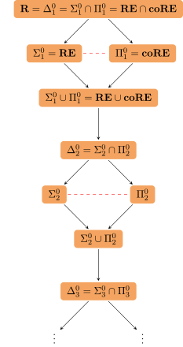

26 \mathbf{R}, \mathbf{RE}, \mathbf{coRE} and beyond
% noend hides “end for”; drop it to keep them
In this chapter we introduce the classes of languages \mathbf{R}, \mathbf{RE}, and \mathbf{co}\mathbf{RE} (for the meaning of the \mathbf{co} prefix see Equation 26.1) and we prove some basic properties of them.
- a figure after the proof of Theorem 26.2 illustrating the diagonalization argument
Recall that for a Turing machine M and input x,
- M(x)\!\downarrow means that the machine M on input x halts (either accepting or rejecting);
- M(x)\!\uparrow means that the machine M on input x does not halt.
Definition 26.1 A language L\subseteq \Sigma^* belongs to \mathbf{R} (aka is recursive or decidable or Turing-decidable) if and only if there exists a Turing machine M such that for every word w\in \Sigma^*,
- if w\in L, M(w)\!\downarrow and accepts;
- if w\notin L, M(w)\!\downarrow and rejects.
Please do not confuse \mathbf{R} with the class of regular languages. The class of all regular languages is \mathbf{Regular} (see Chapter 13), it is a much much much smaller class.
Definition 26.2 A language L\subseteq \Sigma^* belongs to \mathbf{RE} (aka is recursively enumerable or semi-decidable or Turing-recognizable) if and only if there exists a Turing machine M such that for every word w\in \Sigma^*,
- if w\in L, M(w)\!\downarrow and accepts;
- if w\notin L, M(w)\!\downarrow and rejects or M(w)\!\uparrow.
Definition 26.3 A language L\subseteq \Sigma^* belongs to \mathbf{co}\mathbf{RE} if and only if there exists a Turing machine M such that for every word w\in \Sigma^*,
- if w\in L, M(w)\!\downarrow and rejects or M(w)\!\uparrow;
- if w\notin L, M(w)\!\downarrow and accepts.
The previous definitions adapt naturally to L\subseteq \mathbb{N} identifying the natural numbers with strings in \{\textcolor{darkred}{\mathtt{0}}\}\cup\textcolor{darkred}{\mathtt{1}}\{\textcolor{darkred}{\mathtt{0}},\textcolor{darkred}{\mathtt{1}}\}^* via the binary encoding.
Exercise 26.1 (🌱) Show that \mathbf{R}\subseteq \mathbf{RE}\cap \mathbf{co}\mathbf{RE}.
Exercise 26.2 Show that \mathbf{R} is closed under complement.
The opposite containment of Exercise 26.1 is also true.
Theorem 26.1 \mathbf{R}= \mathbf{RE}\cap \mathbf{co}\mathbf{RE}
Exercise 26.3 Show that the Turing machine M in the proof of Theorem 26.1 always halts and it is correct, that is \mathscr{L}(M)=L.
Theorem 26.2 \mathtt{K}=\{x:M_x(x)\!\downarrow\}\notin \mathbf{R}.
The argument used in the proof above is called diagonalization and it is essentially the same idea we saw in Chapter 3. Visually, the table below highlights visually the argument in the proof of Theorem 26.2.
| 0 | 1 | 2 | 3 | \cdots | p | \cdots | |
|---|---|---|---|---|---|---|---|
| M_0 | \downarrow | \uparrow | \downarrow | \downarrow | \uparrow | ||
| M_1 | \uparrow | \uparrow | \downarrow | \uparrow | \downarrow | ||
| M_2 | \downarrow | \downarrow | \downarrow | \uparrow | \downarrow | ||
| M_3 | \uparrow | \downarrow | \uparrow | \downarrow | \uparrow | ||
| \vdots | \ddots | ||||||
| N=M_p | \uparrow | \downarrow | \uparrow | \uparrow | \cdots | ? |
The fact that \mathtt{K}\notin \mathbf{R} is a fact that we will exploit in a systematic way to show that many more natural languages are not in \mathbf{R} either (see Chapter 27).
Corollary 26.1 The classes of languages \mathbf{R}, \mathbf{RE}, and \mathbf{co}\mathbf{RE} are all distinct. In particular \mathtt{K}\in \mathbf{RE}\setminus \mathbf{co}\mathbf{RE} and \overline{\mathtt{K}}\in \mathbf{co}\mathbf{RE}\setminus \mathbf{RE}.
26.1 The Arithmetical Hierarchy
In this section we explore a bit what is beyond \mathbf{R}, \mathbf{RE}, and \mathbf{co}\mathbf{RE}. To do so we prove first a logical characterization of \mathbf{RE} and \mathbf{co}\mathbf{RE}.
There is an equivalent way of describing the arithmetical hierarchy using oracle Turing machines and the Turing jump operator. In these notes we do not explore this equivalent view.
Theorem 26.3 A language A\in \mathbf{RE} if and only if there exists a language B\in \mathbf{R} s.t. A=\{y:\exists x_1,\dots,x_n \langle x_1,\dots,x_n,y\rangle\in B\}.
To make sure you understood the proof of Theorem 26.3 a possible exercise is the following.
Exercise 26.4 Let \Sigma=\{\textcolor{darkred}{\mathtt{0}},\textcolor{darkred}{\mathtt{1}}\} and n=2. In the (\Leftarrow) direction of the theorem above (Theorem 26.3), suppose we change the machine M so that it goes through the pairs (x_1,x_2) with two nested loops:
for each x_1\in\Sigma^* in length-lexicographic order {
for each x_2\in\Sigma^* in length-lexicographic order {
run D on \langle x_1,x_2,y\rangle
if D accepts then
return accept
}
}
- Find a language B\in\mathbf{R} and a string y\in A such that the M above does not accept y.
- Explain why this does not contradict the theorem, and give an ordering of \Sigma^*\times\Sigma^* (different from the one in the theorem) that fixes the problem.
An immediate consequence of Theorem 26.3 is the following.
Theorem 26.4 A language A\in \mathbf{co}\mathbf{RE} if and only if there exists a language B\in \mathbf{R} s.t. A=\{y:\forall x_1,\dots,x_n \langle x_1,\dots,x_n,y\rangle\in B\}.
Exercise 26.5 Prove Theorem 26.4 using the definition of \mathbf{co}\mathbf{RE} and Theorem 26.3.
Example 26.1 The language
\mathtt{ALL_{CFG}}=\{\langle G\rangle :G \text{ is a context-free grammar and } \mathscr{L}(G)=\{\textcolor{darkred}{\mathtt{0}},\textcolor{darkred}{\mathtt{1}}\}^*\}
is in \mathbf{co}\mathbf{RE}.
A simple way to see this is to use Theorem 26.4. The property “G is a context-free grammar and \mathscr{L}(G)=\{\textcolor{darkred}{\mathtt{0}},\textcolor{darkred}{\mathtt{1}}\}^*” can indeed be written as “\forall w\in \{\textcolor{darkred}{\mathtt{0}},\textcolor{darkred}{\mathtt{1}}\}^*, G is a context-free grammar whose terminals are in \{\textcolor{darkred}{\mathtt{0}},\textcolor{darkred}{\mathtt{1}}\} and G generates w”. The condition on the terminals guarantees \mathscr{L}(G)\subseteq\{\textcolor{darkred}{\mathtt{0}},\textcolor{darkred}{\mathtt{1}}\}^*, and the universal quantifier guarantees \{\textcolor{darkred}{\mathtt{0}},\textcolor{darkred}{\mathtt{1}}\}^*\subseteq\mathscr{L}(G). Now, “G is a context-free grammar whose terminals are in \{\textcolor{darkred}{\mathtt{0}},\textcolor{darkred}{\mathtt{1}}\}” is clearly decidable (it is a syntactic check) and “G generates w” is also decidable (for example using the CYK algorithm we saw in Section 17.1). Hence \mathtt{ALL_{CFG}} has the form of languages in Theorem 26.4, with B=\{\langle G,w\rangle :G \text{ is a context-free grammar whose terminals are in } \{\textcolor{darkred}{\mathtt{0}},\textcolor{darkred}{\mathtt{1}}\} \text{ and } G \text{ generates } w\}. We just argued that B\in \mathbf{R}.
A true (but not obvious) fact is that \mathtt{ALL_{CFG}}\notin\mathbf{R}.
Exercise 26.6 Show that the language
\mathtt{EMPTY_{CFG}}=\{\langle G_1, G_2\rangle :G_1, G_2 \text{ CFGs and } \mathscr{L}(G_1)\cap\mathscr{L}(G_2)=\emptyset\}
is in \mathbf{co}\mathbf{RE}. In other words, \mathtt{EMPTY_{CFG}} is the language of valid encodings of two context-free grammars with empty intersection of the generated languages.
(As before, a true, but not obvious fact is that \mathtt{EMPTY_{CFG}}\notin\mathbf{R}.)
Theorem 26.3 says that the languages in \mathbf{RE} are exactly the languages obtained from a decidable language by putting an existential quantifier in front. The arithmetical hierarchy repeats this construction, adding one quantifier at each level and switching between existential and universal quantifiers. This hierarchy classifies subsets of natural numbers based on the complexity of formulas defining them.
For a class of languages \mathcal{C}, we define \mathbf{co}\mathcal{C}=\{A:\overline A\in\mathcal{C}\}. \tag{26.1}
Definition 26.4 (\Sigma^0_k, \Pi^0_k, \Delta^0_k) The classes \Sigma^0_k, \Pi^0_k and \Delta^0_k, for k\geqslant 1, are defined recursively as follows. \Sigma^0_1:=\mathbf{RE}, \Pi^0_1:=\mathbf{co}\mathbf{RE}, and for k\geqslant 1,
- A\in\Sigma^0_{k+1} if there exists a language B\in\Pi^0_k such that
A=\{y:\exists x\ \langle x,y\rangle\in B\}; - \Pi^0_{k+1}:=\mathbf{co}\Sigma^0_{k+1};
- \Delta^0_k:=\Sigma^0_k\cap\Pi^0_k.
Why the superscript 0? The superscript says what the quantifiers range over: individual objects, such as natural numbers or strings, called “type-0” objects in logic. With quantifiers over sets of natural numbers (type-1 objects) we get the analytical hierarchy \Sigma^1_k,\Pi^1_k, which is much larger. Complexity theory uses the same idea in the polynomial hierarchy \Sigma^p_k,\Pi^p_k, where the quantifiers range over strings of polynomial length.
By Theorem 26.1, we have that \mathbf{R}=\Delta^0_1, and unfolding Definition 26.4 gives each level as a block of alternating quantifiers in front of a decidable language. Several quantifiers of the same kind in a row can be merged into one quantifier over tuples, as in Theorem 26.3.
Theorem 26.5 A\in\Sigma^0_k if and only if there exists a language B\in\mathbf{R} such that A=\{y:\exists x_1\,\forall x_2\,\exists x_3\cdots Q_k x_k\ \langle x_1,\dots,x_k,y\rangle\in B\}, where Q_k is \exists if k is odd and \forall if k is even. Similarly, A\in\Pi^0_k if and only if A has the same form with the quantifiers starting from \forall x_1.
Exercise 26.7 (🌱) Prove that \Delta^0_1=\mathbf{R}.
Exercise 26.8 Prove that \Sigma^0_k\cup\Pi^0_k\subseteq\Delta^0_{k+1}.
The inclusion in the previous exercise is actually strict, and Exercise 27.4 asks to prove this (for k=1).
At first sight the arithmetical hierarchy might look a bit artificial, but, as the following exercise shows, some languages are naturally in higher classes than \mathbf{RE} or \mathbf{co}\mathbf{RE}.
Exercise 26.9 Show the following:
- \mathtt{FIN}=\{p:\mathscr{L}(M_p) \text{ is finite}\}\in\Sigma^0_2.
- \mathtt{TOT}=\{p:M_p \text{ halts on every input}\}\in\Pi^0_2.
Theorem 26.6 \Delta^0_k\subsetneq \Sigma^0_k.
We do not see the proof of Theorem 26.6, but it is a generalization of the diagonal argument we used in Theorem 26.2.
Exercise 26.10 This exercise asks to show a couple of consequences of Theorem 26.6.
- \Delta^0_k\subsetneq \Pi^0_k.
- \Sigma^0_k\not\subseteq \Pi^0_k and \Pi^0_k\not\subseteq \Sigma^0_k.
Putting together all the containments between \Delta^0_k and \Sigma^0_k and \Pi^0_k we obtain Figure 26.1, which is part of the big picture in Figure 1.

That is sorting strings first by length, and strings of the same length alphabetically (lexicographically).↩︎